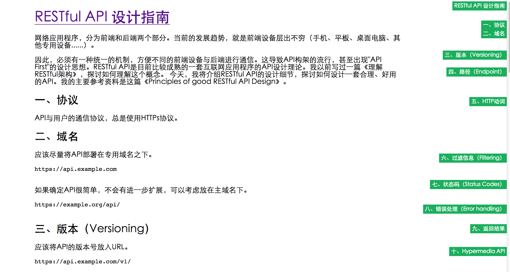

Scrollbar nav 为页面正文提供更好的跳转用户体验。
Scrollbar nav 为页面正文提供更好的跳转用户体验。
它会将你正文内容中的 标题 抽出，创建一个位于滚动条附近的导航，并且导航的位置与你正文标题位置大体一致，点击导航会自动滚到正文对应位置。

你可以下载下来，打开 test/index.html 查看效果。
引入 jQuery 和 jquery.scrollbar-nav.js。
调用：
$('.content').scrollbarNav();
即可自动获取正文 hn 标题并输出到边栏。
$('.content').scrollbarNav({
topOffset : 10
});
目前暂时只支持 topOffset 参数，设置一个数值表示滚动时，标题距离头部的偏移值。
这样可以防止标题紧贴浏览器，同时防止带有 fixed header 的 header 遮住标题。
如果你带有 fixed header，请讲此值设置为你 header 的高度。
目前仅提供非常简单的外观（在 jquery.scrollbar-nav.css）中定义，你可以发挥你的想象修改样式以适应你网站的外观和风格。
.scroll-nav 类包裹整个结构。.scroll-nav li 用来修饰每一条。hn 会在 li 上输出不同的 .scroll-nav-hn 类，例如 h2 标题会输出 .scroll-nav-h2，由此你可以针对不同级别的标题设置不同的大小和尺寸。MIT